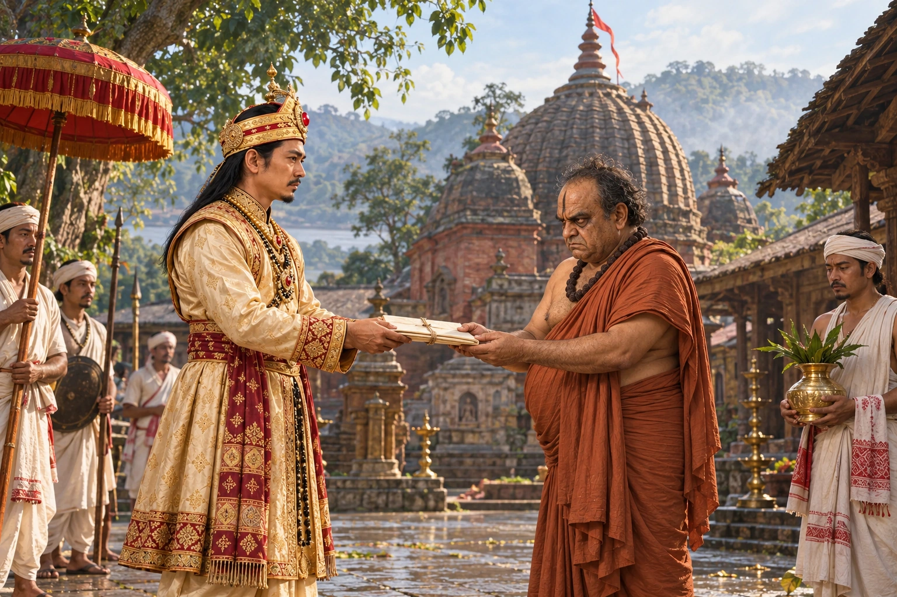

Krishnaram Bhattacharya Becomes the Parbatiya Gosain
c. 1714–1720s · The Tungkhungia kings

Siva Singha becomes the disciple of the Nabadwip Shakta priest Krishnaram Bhattacharya and gives him charge of the Kamakhya temple on Nilachal hill, where he is known as the Parbatiya Gosain.
The document handover illustrates royal patronage, not an authenticated ceremony. Temple courtyard and grant format are reconstructed.
People: Krishnaram Bhattacharya Nyayavagish, Siva Singha (Sutanphaa)
Open this scene in the interactive archive · Follow this event on MAP